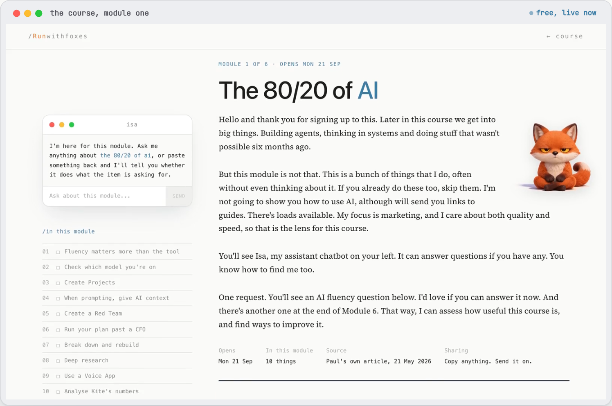
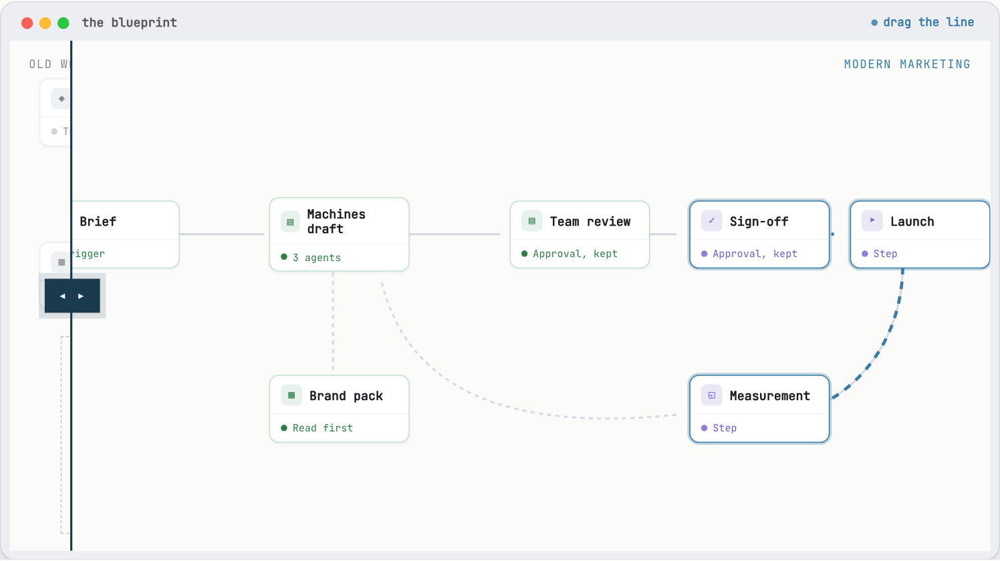
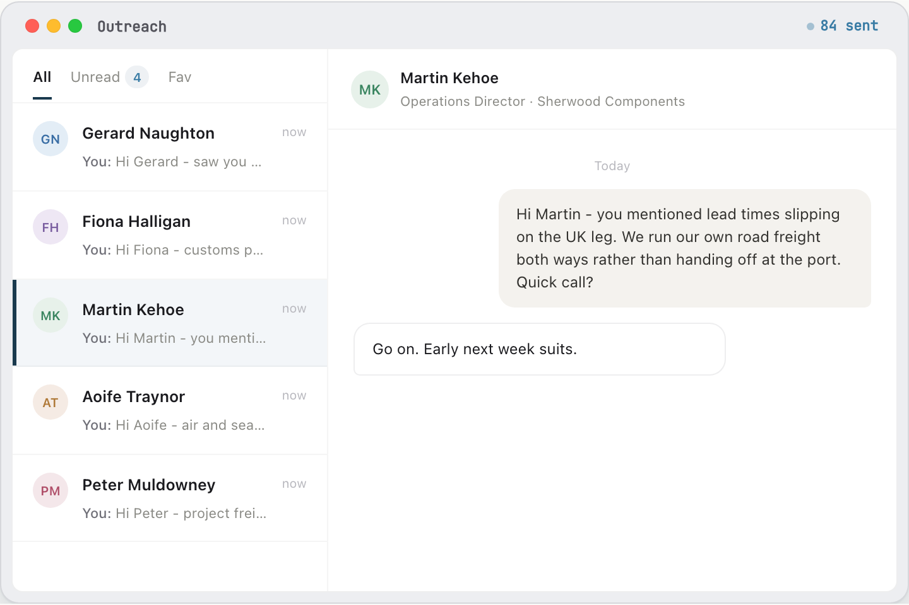
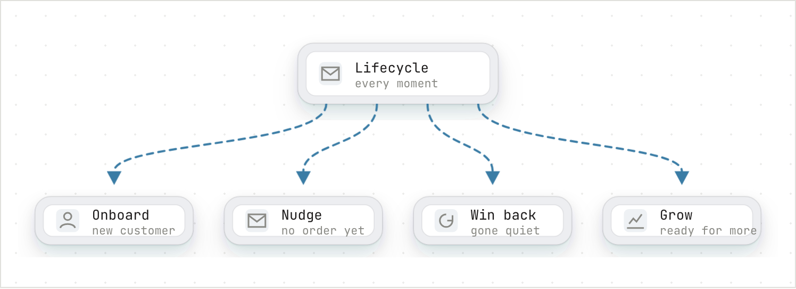
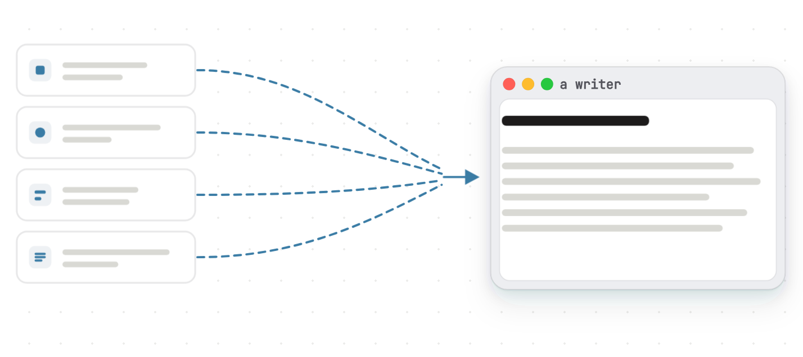

/Runwithfoxes
Good chatting to you both on Tuesday. Below is a list of the things I build. You would likely get use out of a lot of them in time, but you said you wanted to start narrow and see something working first. So I am recommending one thing to begin with, the LinkedIn writer, and it is in section eight.
Before I build anything, I ask one question: what does really good look like here? Not what AI can do, but what the best version of this marketing would be, and the level of quality and effectiveness I would want to stand over.
So I start where I always have. If there were no AI at all, what team would I hire to do this properly? I map that team first, the one I would build in a world before any of this existed.
Then I build exactly that, with agents instead of hires. The quality bar is set by the team I would have wanted, not by whatever a tool happens to make easy. Twenty years in brand is what tells me where that bar sits: Head of Brand at O2 Ireland, then CMO at the National Lottery, Head of Brand at Indeed and Miro, both global roles. Positioning, messaging and tone written first, then built into everything the agents make.
Ireland’s Marketer of the Year, 2022 · Who I work with: Moloco, Heineken, Norcros, Alltech, Smurfit, Hostelworld, Eaton Square, Weatherbys
“His command of marketing science as well as his instincts for great thinking and ideas are, in my opinion, superb.”
Peter Field, The Godfather of Effectiveness, author of The Long and the Short of It
“Paul reported into me as Head of Brand when I was at Indeed. I have learned more from him than anyone else in my career.”
Paul D’Arcy, CMO, Moloco. Former CMO at Miro and Indeed
I firmly believe that marketing structures, marketing teams and marketing roles are going to change dramatically in the next few years, and the work we do is all around that. Specifically, there are four buckets to what we currently do. We train teams. We build AI agents and capabilities for them, or with them. We work with marketing leaders to re-imagine what future workflows could look like, and we design AI adoption programmes for them.
Individual productivity gets you started. Make everyone on a team a little faster and the work still queues in the same places, because the bottleneck just moves down the line. The process, the people and the policies have to change together, and that starts with what each role actually is.
We start by laying out the work to be done, not the team chart. Then we redesign how that work gets done and remove the handovers.
Firstly, there is a free course, AI Fluency for Ambitious Marketers, for anybody on your team. We also run training sessions for marketing, sales and go-to-market teams. These range from half a day to full-week sessions. We cover a range of topics, from pure productivity hacks to building agents and systems. System thinking is a core skill for marketing in an AI world.

/the course, module one. Free and live now at runwithfoxes.com/course.
Redesigning workflows is the harder work, and it is what my new book is about. It is harder not because of the tech or the tools, but because it is about people: their roles, their responsibilities, and sometimes their identities. We map out the activities and how they flow, from a brief through to campaigns and analysis, including the handovers, the time each step takes, the documents and artefacts created, the tools used, and the sign-offs. Then we re-imagine what is possible, both now and in the very near future, starting from a blank page. This is my core skill, as it is what I did building teams client-side for most of my career.

/on the page you drag the line. One window, two worlds: a marketing function as it usually runs, handovers and all, and the same function with AI.
The Outbound Agent finds the right companies and the right people inside them, researches each one, writes a message that is genuinely about that company rather than a template with a name dropped into it, sends it, and reports back on what is working. It runs the whole sequence, on email or LinkedIn or both, and nothing goes out until someone on your team says go.

/illustrative. Every firm and person in that window is invented. The machinery is real and running.
Lifecycle email is the work of keeping and growing the people who already know you. Onboarding a new customer, nudging someone who has not ordered yet, winning back one who has gone quiet, growing the ones ready for more. It is where a lot of revenue comes from, and it usually gets skipped because it never stops. The Lifecycle Agent runs it.

/on the page the four moments fall out of the card.
I read a lot about how AI writes slop. It does. But it doesn’t have to. If you spend time up front. Writers need to know your brand’s positioning, your target audience, insights or pain points related to your category. They need to know your brand’s messaging, and your tone of voice. On top of that, we need to articulate instructions on how we want the writer to interact with us or our colleagues.

/the small folder of documents a writer is built from.
We would build one agent that writes LinkedIn posts for Tony, Eamon and Philip. It researches topics, comes up with the ideas, and writes the posts. You read what it has written, choose the ones you want to use, and paste them into LinkedIn from your own profiles.
Once a month you would get a month’s worth of posts in one go. You pick the ones you like and post them.
There are two sessions with you, then two weeks of building. The agent has to sound like you, so the sessions are where we get that from you. We would ask what you sell, who buys it, why customers pick you over another forwarder, and what a good post sounds like coming from a director. We write that up as your positioning and messaging.
The two weeks are the build and the testing. We build the agent on top of that positioning and messaging, then run real topics through it and review the output with you. You sign off the writing before anything is published.
The agent runs on Claude Managed Agents, which is Anthropic’s own hosted service. You reach it through our page, so there is no software to install and no per-person licence to buy. Anthropic does not use data sent through its commercial API to train its models, and that is a contractual commitment rather than a setting we switch on. Anthropic holds SOC 2 Type I and Type II, ISO 27001:2022 and ISO 42001:2023, and each session runs in an isolated container.
If you would rather run it in your own Claude account, we can move the whole thing across and show you how to run and extend it yourselves.
The positioning and messaging we write in those two weeks is what every other agent would run on. If you later wanted email to your existing customers, or prospect research for the sales team, that groundwork would already be done and the next build starts from it rather than from a blank page.
We would start with the writer. It is the smallest piece of work that gives you something useful, and it is what you asked for on the call. You would see posts going out from your own profiles within about a month of it going live.
Three months is long enough for you to judge whether it is worth continuing. At that point you either carry on with us running it, or you take it in-house and run it yourselves. We will hand it over whenever you want it.
The AI writer
LinkedIn posts, written for you
EUR 3,500 plus VAT
Then EUR 99 a month, reviewed together after three months.
What the price covers
What it doesn’t
If you would rather run it yourselves at any point, we will hand it over. You would run it in your own Claude account and the monthly stops.
Starting with the big companies, and with the one I did from the inside, running the teams rather than advising them.
Miro
150 marketers · brand strategy, advertising, marketing communications, the studio
We were spending about $1.2 million on design and studio work. When I realised what was possible I set a target to reduce it by 20%, and that 20% was the low hanging fruit, the low skill design work.
It took a combination of things. AI to make the images, the video and the copy. A training structure and a training programme. Extra Canva licences. And changes to the brand guidelines and the policies, so that people who were not marketers could serve themselves and move with speed, while keeping everything consistent across the work.
$1.2m spent on design and studio work → $240k taken out, inside a year
Moloco
50 to 60 marketers
They wanted to hire a copywriter. I persuaded them to let me build copywriters in AI instead, and they use them all the time.
The part that matters is what goes into one. A copywriter is built with the positioning, the messaging framework, the pain points and the proof points. That is what makes what comes out usable rather than generic.
I am also building them a brand guardian, and an AI identity generator, which takes all the elements of their brand identity and reproduces them at speed.
Sabre
AI adoption programme, marketing first
I have been building capabilities for Sabre, and I now work alongside their champion inside the marketing team, their marketing director. A combination of him on the inside and me on the outside.
Together we have designed an AI adoption programme for marketing, which we are rolling out now and will extend into go to market.
Alongside the programme I have built them writers, brand guardians, a search agent, a brief coach to improve the quality of their briefs, and an advertising creative role.
Run with Foxes · Private, prepared for Ace Express Freight. The live version of this document, with every exhibit running, is the page this was printed from.